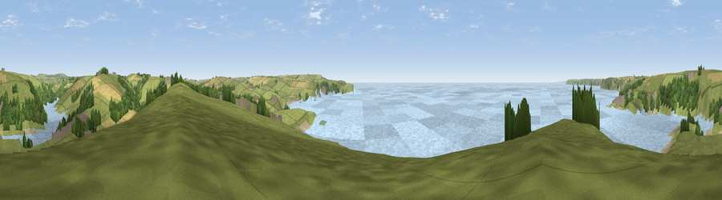

Viewpoint near Thurlestone
#4285 in England · top 12% of its area beats it · near ThurlestoneWhere it is
The exact computed spot (SX 66525 43175). Click the marker for map links.
The view, rendered

A 360° render of this exact spot computed from the terrain model, tree cover and land cover — summer colours, afternoon light, calibrated against photographs of famous viewpoints. Real trees, hedges and buildings will differ in detail.
The panorama
Grey silhouette: terrain skyline in each direction (720 bearings, Earth curvature and refraction included). Dashed green: skyline with trees (+15 m) and buildings (+8 m) as obstacles. Blue strip: how far the ground is visible on each bearing.
Where the view opens
Wedge length = distance to the farthest visible ground on that bearing (vegetation-aware). Rings at 10, 25 and 50 km.
What fills the view
45% water · 39% grassland · 8% woodland · 6% cropland · 1% built-up ·
Angular shares of the visible panorama (visual magnitude), not map area. Landscape diversity 0.52 (0–1 Shannon).
Key numbers
More beautiful places nearby
The staircase of upgrades: each row has a higher view potential than everything closer. Driving times are estimates from straight-line distance, calibrated against real road routing — check an actual route before setting out.
| Place | Direction | Drive | Score |
|---|---|---|---|
| Viewpoint near Bigbury-on-Sea | NW · 2 km | ~5 min | 76.8 |
| Viewpoint near Hope | SSE · 5 km | ~10 min | 84.4 |
| Viewpoint near East Prawle | ESE · 12 km | ~23 min | 84.6 |
| Pencarrow Head | W · 52 km | ~73 min | 86.0 |
| Viewpoint near Stenalees | W · 68 km | ~91 min | 88.0 |
| Viewpoint near Crackington Haven | NW · 74 km | ~97 min | 88.1 |
| Golden Cap | NE · 89 km | ~113 min | 88.7 |
| The Knoll | ENE · 98 km | ~122 min | 91.0 |
50.27342, -3.87443 · source: screening · position refined by local search. Computed location — check access rights before visiting.